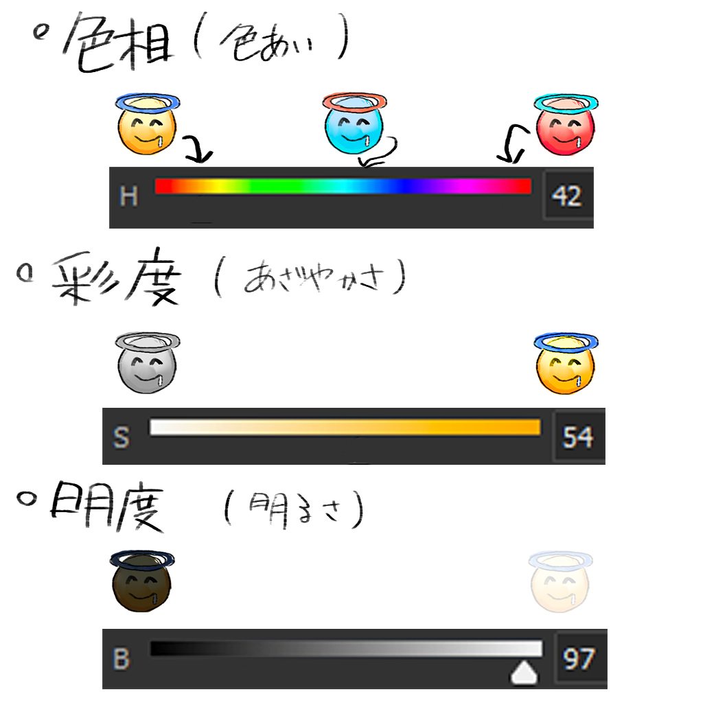

神戸大学漫画研究会の図書館
神戸大学漫画研究会の図書館
勉強会：第3回 見やすいイラストの描き方
0.概要とはじめに
みなさんはどんなイラストが描きたいですか？
あるキャラクターの絵が描きたい！アニメの一場面を自分で描きたい！空をメインとする絵を描きたい！…等、人それぞれたくさんあると思います。
そこで今回は、絵のメインとなる要素を受け手にしっかり見てもらうための方法、考え方をある本の中からいくつか紹介していきたいと思います。
よろしくお願いします！
※以下の内容は書籍からの引用となっています。この記事の最後に本の題名を張っておきますので興味のある方はどうぞ
以下の説明で使用するので、軽く説明しておきます。知ってるよ！という方は読み飛ばしていただいて構いません
----------------------------------------------------------------------------

・色相
赤、黄、青といった言葉で区別される。寒色、暖色といった性質もここで決まる
・彩度
鮮やかさ、強さといった色の性質。彩度が高いと一般的に目を引く色となる
彩度を0にすると明度だけを確認することができる
・明度
色の明るさの度合い。最も明るい色は白、最も暗い色は黒
デジタルツールを使えば、いつでもこれらの値を調節できます。便利。
----------------------------------------------------------------------------
1.見せたい部分を決める
まず初めに、描きたいイラストで何を主役とするかを決めるとよいと思います。
そして、そのためにはどんな構図、配色が良いか考えていきます。
ここで、イラストの中で視線を集める部分（焦点）を作る方法の例をいくつか挙げてみます。
（ここで挙げる方法は沢山あるやり方の中の一例です。好みや画風に左右されますし、これらを守らずとも魅力的な絵は沢山あると思うのであくまで考え方の一つとして見てください。）
①焦点領域の明度の差を大きくする
人間の目は画面内で最も明度差が大きい領域に引き寄せられるそうです。
これを用いて、見せたい部分のコントラストを高めることで焦点を作ることができます。
簡単に明度差を作り出す方法として、光が当たる様子を描くことで自然と明度のコントラストが生まれます。
（絵の明暗だけ確認したい！という場合はデジタルツールで彩度を0にすると確認できます！）
②焦点領域の彩度を上げる
彩度の高い（あざやかな）領域を絞ることで、目の引く部分を限定します。
例えば顔の部分を見てもらいたい！という場合、その付近に鮮やかな色を使えば視線が集まりやすくなります。
左の例だと葉の緑の彩度が高く、背景の主張が強く感じられてしまうかもしれません。
（正直彩度の強弱は好みの問題な気もしますが、、、）
③情報量を減らす（描き込みを減らす）
写真を例に見てみます。
絵に置き換えてみると、左は全体にまんべんなく描き込みを行ったとき、右は焦点となるペンとペン立てだけ描き込み、それ以外は細かい描写を省いた例だと考えてください。
遠目で上の二枚の例を見比べてみてください。
右の例だと、多くの人はペンが立っている様子が目に入ってくるのではないでしょうか。
一方左の例では画面内のぬいぐるみや後ろの絵まで詳細に目で確認することができるため、見る人のペンに対して割かれる意識が少なくなってしまいます。
画面内の要素に優先順位をつけ、描き込みの差をつけると見せたい部分をはっきりとさせることができるかもしれません。
2.うまい絵をまねる
どうしても頭の中のイメージを再現できなくて手が止まってしまうこともあると思います。
そんな時は、自分の思うこんな風に描きたい！というイラストを探してきて、デジタルツールで調べてみるのがおすすめです。
かっこいい顔を描きたいけど描けない、、という場合は、自分の思うかっこいい顔のイラストを収集しましょう！
そして、どんなふうに描けばかっこよくなるのか、なるべくいろんな視点で見てみるのが良いと思います。
（線画、線の強弱、色の数、構図、配置、彩度、明暗の差、光の当て方、、、等）
彩度や明度、色相は目で見てもわかりずらいので、具体的な値で見比べるとよいかもしれません。
肌の色をスポイトしてみたりすると、自分が思っていたものと全然違う色だったりします。
ほかにも全体をモノトーンに変換してみたり、描き込みの量を調べてみたりと色々なことができます。
上に挙げたような、ぼかしや彩度を上げる以外に見せ場を作るやり方をたくさん発見できると思います！
3.まとめ
惰性で手を動かしていると、手癖でいつもどおりの作業をしがちだと思います。
作業中、どんな絵がかきたいのか逐一確認し、
・引きで全体像を見る
・真似したい絵を横において比較し、何が足りないか考える
など意識し、必要な部分や無駄な部分を取捨選択することでよりわかりやすい、見やすいイラストになると思います！
参考にした本↓
Vision-ストーリーを伝える:色、光、構図
（担当者:おだやかじんせい）